Web ページに埋め込むことのできる GIF や JFIF などの画像フォーマットは、 色のついた点（画素、ピクセル）の集合で画像を表現するもので、 ビットマップ画像と呼ばれます。 camera などで取り込んだ画像はビットマップ画像ですが、 Showcase で作成するファイルは、 基本的に構造を持った画像（図形）であり、 これをそのまま Web ページに利用することはできません。
| ベクトル画像について |
|---|
| 線分や円などの図形要素を組み合わせた画像は ベクトル画像と呼ばれます。 Web ページでもベクトル画像が利用できないわけではなく、 PDF (Portable Document Format) や Shockwave などのデータ形式が利用されています。 ただし、いずれも Web ブラウザ自身では表示できないため、 プラグインや ヘルパ・アプリケーション と呼ばれる外部のプログラムを利用する必要があります。 前者のヘルパ・アプリケーション (Acrobat Reader) はここのコンピュータ (O2) にも用意されていますが、 日本語の表示ができません（Windows や Macintosh 用のものは可能です）。 また、後者のプラグインは IRIX（というより UNIX）用の Netscape に対応したものがないので、 O2 では表示できません。 将来は Web ブラウザ自身でベクトル画像の表示が行えるよう、 HTML が拡張される予定です。 |
６階の演習室の O2 で使用できる、 ビットマップ画像編集用のアプリケーションには、 次のようなものがあります。
| imgworks | IRIX 標準添付のアプリケーション |
| gimp | フリーソフトェアのアプリケーション、 photoshop 並に強力 |
| photoshop | パソコン等で使われるこの類いのアプリケーションの王様 |
| xpaint | 簡単なお絵書きアプリケーション、フリーソフトウェア |
IRIX にはビットマップ画像の編集を行うアプリケーションが いくつか用意されていますが、ここでは photoshop を使ってみます。
| O2 の photoshop について |
|---|
| photoshop は本来 Macintosh や Windows 用のアプリケーションですが、 O2 の photoshop は Macintosh 用のものを UNIX 向けに移植したものです。 このため、その操作方法は IRIX の他のアプリケーションとかなり違います。 また、この photoshop はパソコン用のものに比べるとバージョンが古く、 日本語にも対応していません。 しかし、それでも photoshop は、 画像編集用のソフトウェアとしては非常に強力で高機能です。 ここではその機能のすべてを網羅する時間はありませんので、 興味のある人は自分でいろいろ試してみてください。 |
では、photoshop を起動してください。 これはアイコンカタログの Application のところにあります。 同じところに photoshop_sgi というのもありますが、 こちらは今は使わないでください （これは O2 の画像処理ハードウェアを使ってフィルタなどの処理を高速化したものですが、 一度は photoshop の方を起動しておかないと使用できません）。 シェルから photoshop コマンドを実行しても起動できます。
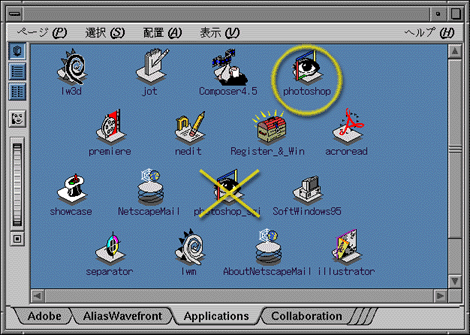
最初に起動したとき、 次のようにソフトウェアの使用条件の確認を求めるウィンドウが現れます。 ここでは Accept をクリックして、先に進んでください。
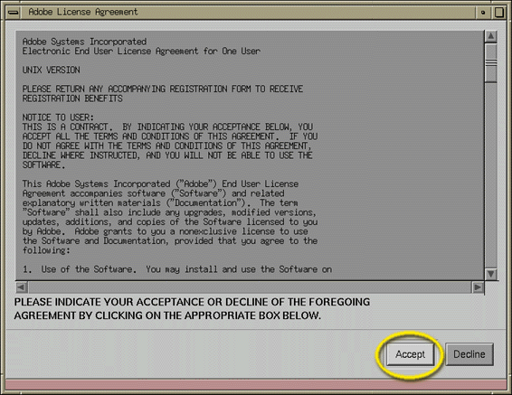
すると今度は、photoshop が使用するメモリについて確認を求めてきます。 ここでも OK をクリックして、先に進んでください。
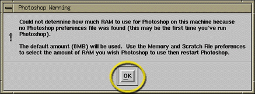
上のウィンドウは、photoshop が 8MB（メガバイト）のメモリを作業用に割り当てるということを示しています。 これは画像の編集を行うにはちょっと少ないので、 もう少し多めにメモリを割り当ててやることにします。
photoshop は起動すると複数のウィンドウを開きます。 そのうち、一番上に現れるものがメインのメニューバーのウィンドウです。 この "File" から "Preference" → "Memory and Scratch Files..." という順にメニューを選んでください。
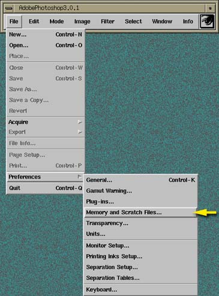
すると、photoshop が使用する作業用のディスクとメモリの設定を行うウィンドウが現れます。
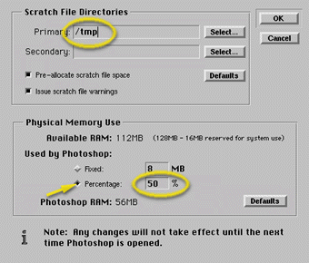
"Scratch File Directores" の "Primary" には、 あなたのホームディレクトリ以下の場所が設定されていると思います。 あなたのホームディレクトリの実体は、 あなたが今使っているコンピュータ上ではなく、 ネットワークを介してサーバコンピュータ上にありますから、 このままだとかなり効率が悪くなります。 そこで、これを消して、代りに "/tmp" を設定してください。
また "Physical Memory Use" は、 多分 "Fixed" で "8MB" に設定されています。 ここの O2 には 128MB のメモリが搭載されていますから、 もう少し多くのメモリを割り当てます。 メモリはオペレーティングシステムやウィンドウシステム、 コンソールウィンドウなどの他のプログラムも使っていますから、 とりあえず半分くらいを割り当てておきましょう。 "Persentage" を選択して、"50%" を書き込んでください。
以上の設定が終わったら、 このウィンドウの右上の OK をクリックしてください。 そのあと、一度 photoshop を終了してください。 photoshop を終了するには、メニューバーの "File" から "Quit" を選ぶか、 メニューバーの上で Ctrl-Q をタイプしてください。
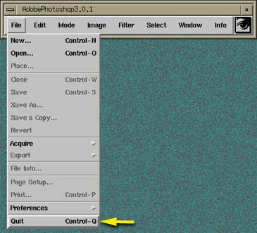
では、先日作成したホームページの背景に貼り付ける画像を作成してみましょう。 背景の画像は camera などで撮った画像を使っても構いませんが、 これはタイリングで表示されるので、 できれば境界が目立たないような模様を使った方がきれいなホームページになります。 そのような画像の作り方の理論は デジタル信号処理 で学習できると思いますが、 ここでは O2 の photoshop に組み込まれている KPT (Kai's Power Tools) を使います。
もう一度 photoshop を起動してください。 今度は "File" から "New" を選んで、 新しい画像の作成を行います。
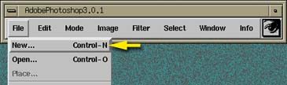
作成する画像の名前とサイズを指定します。
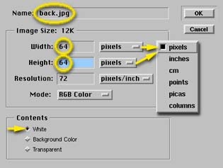
背景の画像なので、画像のファイル名 (Name) は back.jpg にしましょう。 画像のサイズの単位は欄の右側のポップアップメニューで指定します。 ここでは pixels（画素、ピクセル）を選択してください。 背景の画像はタイリングで表示されますので、 画像の幅 (Width) と高さ (Height) はそれぞれ 64～256 ピクセル程度にします。 小さいと周期性が目立ちますが、 あまり大きいと背景の表示に時間がかかってしまいます。
画像のサイズを 8 の倍数にしているのは、 この画像を保存するときの画像フォーマットに JFIF (JPEG) を選んだ場合、 この方式が 8×8 画素単位にデータを符号化するため、 多少はデータの圧縮率が向上すると考えるからですが、 別にこれにこだわる必要はありません。
"Mode:" は "RGB Color" にしてください。 あと、"Contents" には "White" を選んでおいてください。 作成する画像の背景が白色になります。
以上が設定できたら、OK をクリックしてください。
作成する画像が小さいとウィンドウが縮んでしまいますが、 気色悪ければウィンドウを適当に引き伸ばしてください。
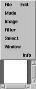
→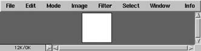
それでは、ようやく背景の描画に入ります。 メニューバーの "Filter" から "KPT 2.0" → "KPT Texture Explorer 2.0" を選んでください。
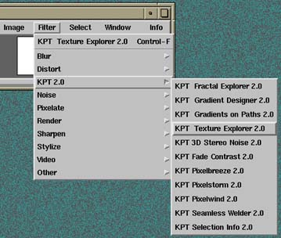
すると、こういう派手なウィンドウが現れます。
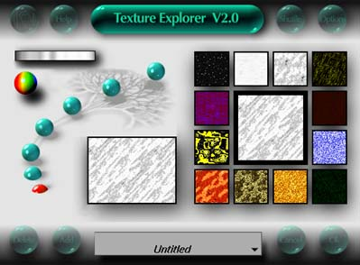
KPT には Texture Explorer ひとつをとっても様々な機能があるので、 使い方を逐一説明する気力が湧きません。 適当にクリックしていればいろんなパターンが現れますので、 いろいろ試してみてください。
背景に使うパターンが決まったら、 右下の OK をクリックしてください。
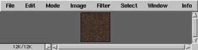
出来上がった画像を保存します。 メニューバーの "File" から "Save" を選んでください （"Save" が選択できなかったり、 下の保存のウィンドウが現れないときは、 "Save as..." の方を選んでください）。
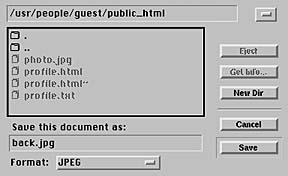
一番上の欄はファイルを保存するディレクトリですから、 ホームページ用のディレクトリ（/usr/people/(ログイン名)/public_html） を指定してください。 "Format:" は "JPEG" を選択してください。 以上が設定できたら OK をクリックしてください。
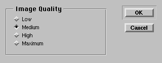
JPEG 方式でファイルを保存するときは、 その際の画質 (Quality) を指定できます。 Quality が低い (Low) ほど保存される画像の画質は悪くなりますが、 その分ファイルのサイズが小さくなります。 ホームページ用の画像はできるだけファイルのサイズが小さい方が望ましいのですが、 どの程度の画質が必要かは、自分の目で見て決めてください。 ここではとりあえず中程度 (Medium) を選択しておきましょう。 そのあと OK をクリックしてください。 ファイルが保存できたら photoshop を終了してください。
もし、back.jpg を別のところに保存してしまった場合は、 photo.jpg 同様シェルかディレクトリウィンドウを使って public_html に移動してください。
ここまでできたら、 次は mule で index.html を開いてください。
% cd public_html[Enter] % mule index.html[Enter] |
いま作った画像を背景に貼り込むために、 <body> のタグを変更します。 background= に今作った画像を指定する他、 bgcolor= にも今作った画像に似た色を指定してください。 text= や link=, vlink=, alink= も、 文字が見やすいような色を設定してください。
<!DOCTYPE HTML PUBLIC "-//W3C//DTD HTML 3.2//EN"> <html> <head> <title>Kentaro's page</title> </head> <body background="back.jpg" text="#ffffff" bgcolor="#4b3232" link="#00ff00" vlink="#00aa00" alink="#ff0000"> <h1>和歌山健太郎のホームページ</h1> <p>和歌山健太郎のホームページへようこそ。</p> </body> </html> |
完成したら、 自分のホームページを見てみましょう。
photoshop は、もちろんマウスなどを使って絵を描く目的にも使用できます。 しかし、何もないところからいきなり絵を描き始めるよりは、 すでに存在する絵や写真を取り込んで、 それに修正を加えていく、 レタッチという用途に向いていると思われます。
photoshop には下のようなウィンドウがあります。 このウィンドウをツールパレットと呼びます。 ツールパレットの個々のツール（道具）には、 それぞれオプションが設定できます。 ツールを選択すると、 オプションウィンドウに設定可能なオプションが表示されます。
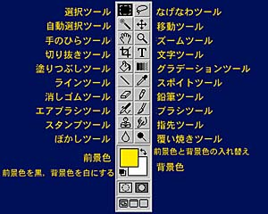
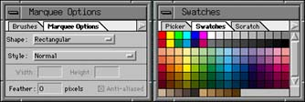
| 選択ツール | 画像の領域を選択します。 領域の形状は四角形や楕円形などをオプションで指定できます。 このほか選択領域の境界部分のぼかしなどが設定できます。 |
| なげなわツール | マウスの軌跡で囲まれた領域を選択します。 |
| 自動選択ツール | マウスでクリックした部分の色の近似色の領域を選択します。 色の近似度はオプションウィンドウで設定します。 [Shift] を押しながらクリックすると、 その部分をすでに選択されている領域に追加します。 |
| 移動ツール | 選択した領域の画像や画像全体を移動します。 |
| 手のひらツール | 表示範囲の移動。 編集中の画像がウィンドウ内に収まりきらないとき、 これを使って表示部分を移動します。 画像自体に変更が加えられるわけではありません。 |
| ズームツール | クリックしたところを中心に、表示を拡大します。 [Alt] を押しながらマウスをクリックすると、 表示を縮小します。 いずれも画像自体に変更が加えられるわけではありません。 |
| 切り抜きツール | 画像の領域を選択して、その部分を切り抜きます。 選択された領域にはハンドルが付いているので、 ハンドルをつかんで領域の微調整ができます。 その後選択部分にマウスを持っていくとマウスカーソルがハサミの形になるので、 そこでクリックします。 |
| 文字ツール | 画像に文字を入力します。 |
| 塗りつぶしツール | クリックした部分と同じ色の領域を、 インクを流し込むように別の色に塗りつぶします。 |
| グラデーションツール | グラデーションをかけます。 マウスでグラデーションの方向や勾配を設定します。 |
| ラインツール | 線を引きます。 オプションで線の太さや矢印、透明度などを設定できます。 |
| スポイトツール | マウスでクリックした部分を前景色に設定します。 [Alt] を押しながらマウスをクリックすると、 背景色に設定します。 |
| 消しゴムツール | 画像を背景色で塗りつぶすか、透明にします。 オプションウインドウで消しゴムの大きさや形を選択できます。 |
| 鉛筆ツール | 前景色でくっきりした線を引きます。 オプションウインドウで鉛筆の太さや形を選択できます。 |
| エアブラシツール | エアブラシのように背景の上に前景色をのせます。 オプションウインドウでエアブラシの太さや形を選択できます。 |
| ブラシツール | 筆で描くように背景の上に前景色をのせます。 オプションウインドウでブラシの太さや形を選択できます。 |
| スタンプツール | 画像のある部分を、別の場所にコピーします。 はじめに [Alt] を押しながらマウスをクリックして、 コピーする部分の画像をサンプリングします。 そのあとコピーする先でマウスをドラッグすると、 そこにサンプリングした場所の画像がコピーされます。 |
| 指先ツール | ドラッグした部分を指先でこすったようにぼかします。 オプションウインドウで指先の太さや形を選択できます。 |
| ぼかしツール | ドラッグした部分を、 水滴をかけてにじませたようにぼかします。 オプションウインドウで水滴の大きさや形を選択できます。 |
| 覆い焼きツール | ドラッグした部分を明るくします。 |
今度はホームページにつけるバナー (banner, 幟? 看板?) を作ってみましょう。 バナーの幅は300～600 ピクセル、高さは 100～400 ピクセルくらいにしておきましょう。 "Mode:" は "RGB Color"、"Contents" には "White" を選んでおいてください。
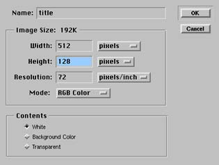
OK のボタンをクリックすると、下のようなウィンドウが開きます。
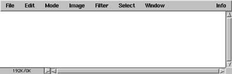
このウィンドウ（画像ウィンドウ）に、 鉛筆やブラシ、エアブラシなどを使って絵を描いてみてもいいでしょう。 色を変更するには、前景色や背景色の四角をクリックして色選択ウィンドウ （カラーピッカー）を呼び出すか、 色見本 (swatch) などをクリックしてください。
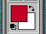
→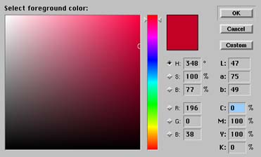
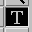
文字を入れるには、次のようにします。 まず、先に前景色に文字の色を設定しておきます。 その後ツールパレットから“Ｔ”のツール（文字ツール）を選んでください。 すると、画像ウィンドウの上ではマウスカーソルがＩ型（Ｉビーム）に変わります。 文字を入れるところで、マウスをクリックしてください。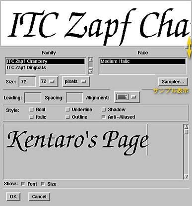
"Family" と "Face" を指定して、 字体（フォント）を決めて下さい。 "Sampler..." のボタンをクリックすると、 下のように字体の一覧を表示してくれます。 文字の大きさ (Size:) は、 画像を新規作成するときに指定した画像のサイズを考えて決定してください。 単位はピクセル (Pixels) にしておいた方が考えやすいでしょう。 大きなサイズを指定すると、ウィンドウの上部のサンプル表示がはみ出てしまうので、 その右側にある小さな四角いボタンをドラッグして、 サンプル表示のウィンドウのサイズを調整してください。
このウインドウの下側の部分に、 画像に入れる文字をタイプします。 その後 OK をクリックしてください。
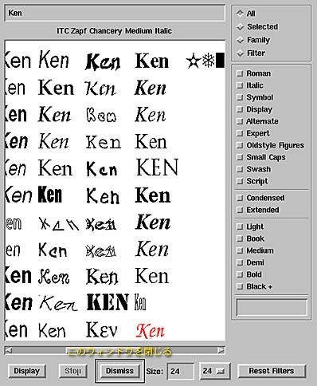
入力された文字は、その文字の形で領域選択の状態になっていますから、 マウスでドラッグして適当な位置に移動してください。 Ctrl-D をタイプすると領域選択が解除されて、 文字がその場所に定着します。
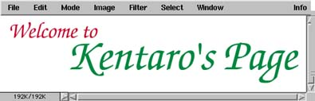
Showcase の場合と違って、 この文字はその領域をその色で“染めた”ようなものですから、 定着した文字を移動したり、後から色を変えたりするのはちょっと面倒です。
ではこの画像を、今度は GIF 形式で保存してみましょう。 メニューバーの "File" から "Export" → "GIF89a Export..." という順にメニューを選んでください。
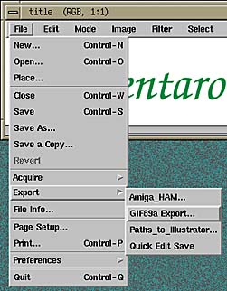
これはそのまま OK をクリックして先に進んでください。
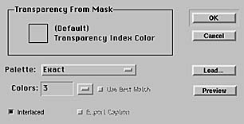
保存するファイル名には、 元のファイル名に ".gif" という拡張子をつけたものになっているはずです。 先ほどと同じようにホームページのディレクトリに保存してください。
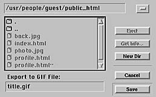
このバナーをホームページに貼り付けましょう。
<!DOCTYPE HTML PUBLIC "-//W3C//DTD HTML 3.2//EN"> <html> <head> <title>Kentaro's page</title> </head> <body background="back.jpg" text="#ffffff" bgcolor="#4b3232" link="#00ff00" vlink="#00aa00" alink="#ff0000"> <img src="title.gif" alt="和歌山健太郎のホームページ"> <h1>和歌山健太郎のホームページ</h1> <p>和歌山健太郎のホームページへようこそ。</p> </body> </html> |
以上の方法で作ったバナーは、 背景の部分が枠として表示されていると思います。 デザイン上、これで問題なければいいのですが、 枠が邪魔なときもあるでしょう。 そういうときは、画像の新規作成の時に "Contents" として "Transparent" を選んでください。
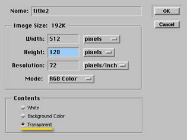
こうすると、作成したウィンドウの背景は透明になります （透明の部分は薄い市松模様で表されます）。
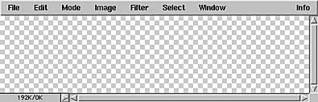
このウィンドウで作画を行い、 先ほどと同様に GIF で出力すれば、 透明の部分はホームページの背景が透けて見える GIF ファイル （透過 GIF）が作成できます。
ただし、この方法だと境界線がギザギザになって多少見苦しいかも知れません。 境界線がなめらかな透過 GIF を作るには、 またちょっと工夫が要ります。
自分のホームページの背景に画像を貼り付け、 透過 GIF あるいはドロップシャドウを使ったバナーを取り付けよ。